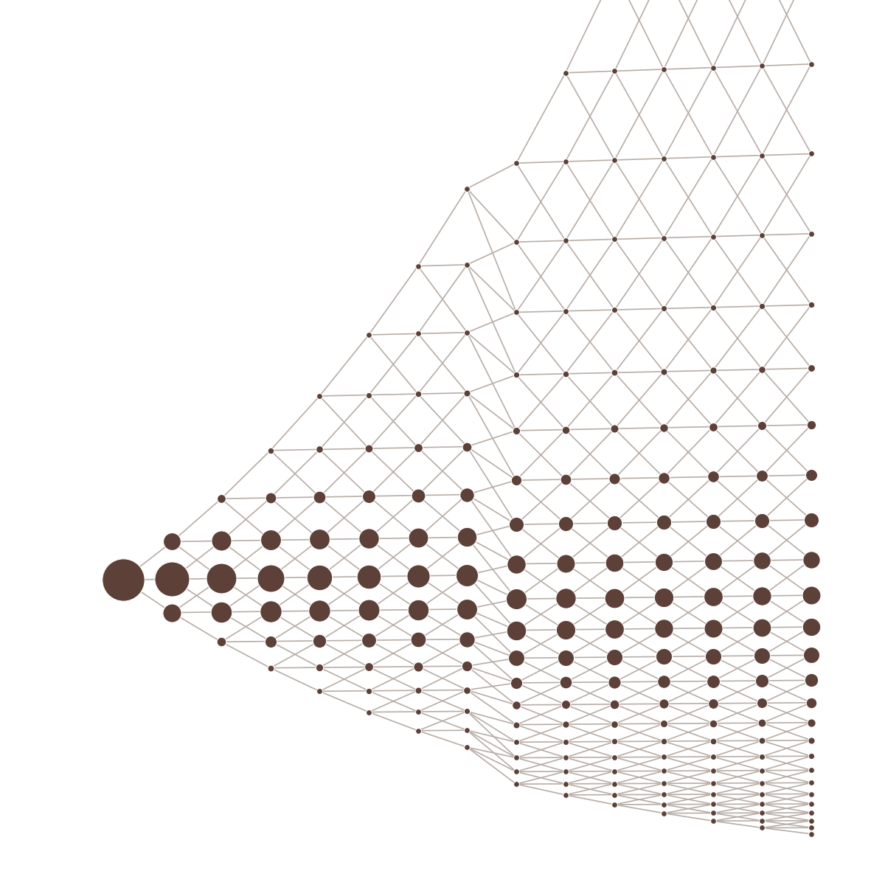
Le code est sur github.com/treeboatt/Informatique-Quant-Project. Les études se relancent depuis la racine du dépôt, venv activé, avec les scripts de analysis/ : par exemple convergence_binaire.py (figure 7) ou backward_vs_recursif.py (figure 9). Chaque script affiche dans la console les chiffres cités. Les figures du rapport sont rangées dans report/figures/, et le PDF se régénère avec python report/build_pdf.py.
Le projet consiste à pricer des calls et des puts, européens et américains, sur un arbre recombinant binomial et trinomial, avec un dividende discret, en Python orienté objet. Le calcul se fait en deux temps : on construit l'arbre de la date de pricing jusqu'à la maturité (forward), puis on remonte la valeur de l'option de la maturité jusqu'à aujourd'hui (backward). Sans dividende, le prix doit converger vers Black-Scholes.
L'énoncé interdit d'utiliser un dictionnaire, une liste ou un tableau pour accéder aux nœuds. Un nœud connaît ses voisins de colonne et ses trois successeurs ; seuls les nœuds du tronc connaissent le passé. Toute l'architecture découle de cette règle : le parcours de l'arbre, la recherche du successeur du milieu et la remontée du prix se font uniquement en suivant des pointeurs.
Nous avons fait du trinomial notre modèle principal, avec l'écart entre nœuds proposé par le cours, α = eσ√(3Δt). Plutôt que d'écrire un second arbre pour le binomial, nous l'avons fait hériter du trinomial : un arbre binomial n'est rien d'autre qu'un trinomial dont la probabilité du milieu est nulle.
Nous avons aussi voulu un seul point d'entrée, la fonction api.price(...). Les tests, les scripts d'analyse et l'application passent tous par elle, ce qui garantit qu'ils pricent exactement de la même façon. Le pruning, lui, reste optionnel et désactivé par défaut : il fait gagner beaucoup de mémoire, mais il introduit un petit biais, et nous ne voulions pas qu'il soit activé sans qu'on le demande.
Enfin, pour le visuel final, nous avons préféré une application Streamlit à une feuille Excel. On y règle les paramètres, puis on voit le prix comparé à Black-Scholes, les grecques, le dessin de l'arbre, les courbes de convergence, ainsi que le temps de calcul, la mémoire et le nombre de nœuds.
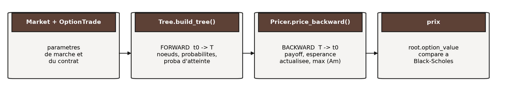
Les deux temps sont séparés dans deux classes distinctes. Tree ne connaît de l'option que sa maturité : le strike, le type call/put et le style d'exercice ne servent qu'au Pricer. Un même arbre peut donc pricer plusieurs options sans être reconstruit. À N = 1000, la construction prend environ 3,5 s, puis chaque prix européen environ 300 ms et chaque prix américain environ 630 ms. C'est ce qui rend utilisables les études de convergence et l'application.
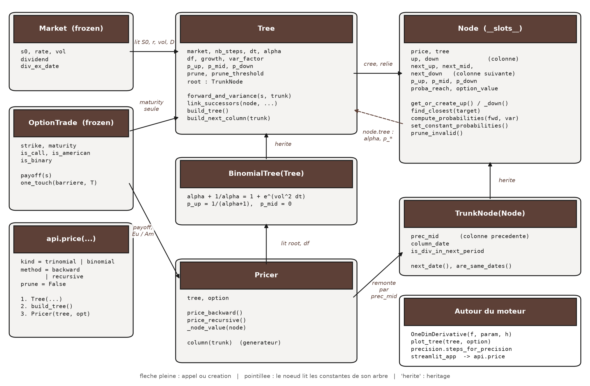
| Classe / fonction | Fichier | Rôle en une ligne |
|---|---|---|
Market, year_fraction | market.py | Données de marché figées ; seule conversion dates → années (jours / 365) |
OptionTrade | option.py | Strike, maturité, call/put, Eu/Am, vanille ou binaire, et payoff(S) ; one_touch(...) fabrique un one-touch |
Node / TrunkNode(Node) | node.py | Un nœud et ses pointeurs ; le nœud du tronc porte en plus la date et le lien vers le passé |
Tree / BinomialTree(Tree) | tree.py | Constantes d'un pas et construction colonne par colonne |
Pricer, column(trunk) | pricer.py | Remontée backward ou récursive, exercice américain ; parcours d'une colonne |
api.price | api.py | Enchaîne Tree → build_tree → Pricer : trinomial ou binomial, backward ou récursif |
OneDimDerivative | greeks.py | Dérivées par différences finies, la fonction de pricing passée en paramètre |
bs_price, precision, plot_tree | divers | Référence fermée, N déduit d'une précision, dessin de l'arbre |
Deux dépendances structurent tout le reste. D'abord, Tree crée les nœuds et chaque nœud garde un pointeur vers son arbre (node.tree). C'est par lui qu'un nœud lit α pour créer un voisin, les probabilités constantes, le seuil de pruning, ou incrémente le compteur des nœuds élagués. Ensuite, Pricer ne connaît que la racine : il retrouve tout le reste en suivant next_mid vers la maturité, puis prec_mid pour revenir.
Comme Node n'utilise de son arbre que quelques attributs (alpha, p_up, prune_threshold…), les tests unitaires des nœuds tournent avec un faux arbre minimal, sans construire de Tree. Pour travailler à deux sans se gêner, nous avons écrit notre contrat dans docs/interface.md : il fixe les noms des attributs et trois conventions qui casseraient le code de l'autre si on les oubliait (une valeur d'option qui naît à None, des successeurs qui peuvent valoir None, et un facteur d'actualisation df qui vaut pour un seul pas).
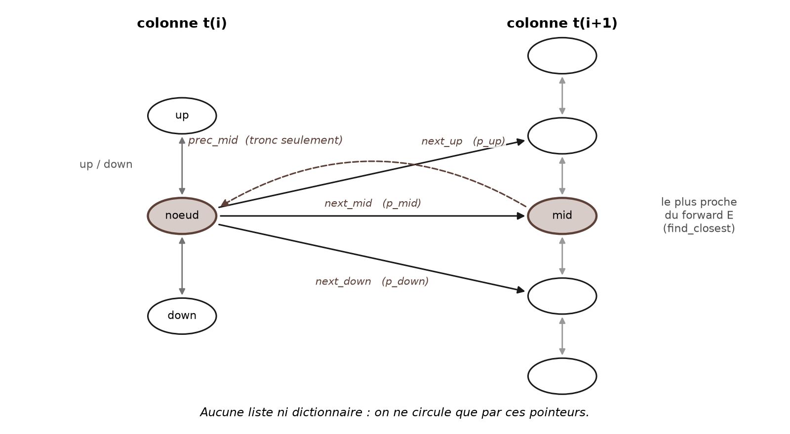
Node déclare ses douze attributs dans __slots__ : le prix, le lien vers l'arbre, deux voisins de colonne (up, down), trois successeurs, trois probabilités de transition, la probabilité d'atteinte depuis la racine et la valeur de l'option. Sans dictionnaire d'attributs par instance, un arbre de 1 002 001 nœuds tient dans 168 Mo, soit environ 176 octets par nœud en comptant toutes les allocations.
TrunkNode ajoute trois attributs : prec_mid, le seul pointeur vers la colonne précédente, la date de la colonne, et is_div_in_next_period, calculé une fois à la création.
api.price crée Tree(market, pricing_date, option.maturity, nb_steps). Le constructeur calcule une fois pour toutes Δt (via year_fraction), α, df = e−rΔt, growth = erΔt, le facteur de variance et les probabilités sans dividende, puis crée la racine TrunkNode(S0), de probabilité d'atteinte 1.TrunkNode décide si le dividende tombe dans sa période (ti < tex ≤ ti+1), avec are_same_dates, qui compare les dates à 1 jour / N / 1000 près.build_tree appelle N fois build_next_column(trunk), qui renvoie le tronc suivant.# tree.py — une colonne (simplifié) fwd, var = self.forward_and_variance(trunk.price, trunk) new_trunk = TrunkNode(fwd, self, trunk, trunk.next_date()) # le tronc suit le forward trunk.next_mid = new_trunk self.link_successors(trunk, fwd, var, trunk) previous, node = trunk, trunk.up # on monte la colonne... while node is not None: fwd, var = self.forward_and_variance(node.price, trunk) node.next_mid = previous.next_mid.find_closest(fwd) # part du mid du voisin self.link_successors(node, fwd, var, trunk) previous, node = node, node.up # ... puis on la descend par .down (avec un test fwd > 0 avant find_closest)
link_successors fait le lien entre l'arbre et le nœud. Il appelle node.set_constant_probabilities() quand la période ne contient pas de dividende, node.compute_probabilities(fwd, var) quand elle en contient un, et node.prune_invalid() si le forward est négatif. Il crée ensuite les successeurs haut et bas avec next_mid.get_or_create_up() et get_or_create_down(), et propage la probabilité d'atteinte : chaque successeur reçoit la probabilité d'atteinte du nœud multipliée par la probabilité de transition. Si le pruning est activé et que le nœud est sous le seuil, il passe tout droit vers next_mid avec une probabilité de 1.
Un nœud ne crée jamais directement un voisin : get_or_create_up() le renvoie s'il existe déjà, et relie les deux nœuds dans les deux sens. find_closest part du successeur du milieu du voisin, déjà placé, et se déplace d'un nœud à la fois tant que la cible est plus proche du nœud suivant. On n'a donc jamais besoin d'indice. Nous avons vérifié que chaque colonne i contient bien 2i + 1 nœuds, ce qui donne 1 002 001 = 1001² nœuds pour N = 1000.
Sans dividende, le forward d'un nœud vaut S·erΔt. Comme le tronc avance lui aussi de erΔt et que la grille est géométrique, ce forward tombe exactement sur un nœud de la colonne suivante. Les trois probabilités sont alors identiques partout : Tree les calcule une fois et les nœuds les recopient. Sans dividende, aucun nœud ne refait le calcul ; avec un dividende, seuls 99 nœuds sur 10 250 le refont, soit 1 %. C'est plus rapide, mais surtout plus précis : la formule générale divise un petit numérateur par un petit dénominateur quand le forward est proche du nœud du milieu, ce qui amplifie les erreurs d'arrondi.
Le dividende est additif alors que la grille est multiplicative : sur la période du détachement, le forward sort de la grille, et les probabilités doivent être résolues nœud par nœud. C'est là que find_closest fait vraiment son travail, en recâblant les successeurs (figure de couverture). Tout en bas de l'arbre, le forward peut devenir négatif : le nœud est alors élagué par prune_invalid s'il est pratiquement inatteignable, et le calcul s'arrête avec une erreur claire sinon.
Pricer.price_backward() suit next_mid depuis la racine jusqu'à la dernière colonne et y pose les payoffs. Il remonte ensuite colonne par colonne grâce à prec_mid. Le générateur column(trunk) parcourt une colonne en suivant up, puis down, à partir du tronc. Le prix est la valeur finale de la racine.
On repère l'exercice anticipé sans rien stocker de plus : si la valeur d'un nœud est égale à son payoff, c'est que le pricer a choisi d'exercer. plot_tree s'en sert pour dessiner la frontière d'exercice.
Le cours propose aussi un parcours récursif, que price_recursive() implémente : la racine demande sa valeur à ses trois successeurs, qui la demandent aux leurs, jusqu'à la maturité. Sans précaution, un arbre recombinant serait reparcouru 3N fois ; chaque nœud retient donc sa valeur dans option_value, et un nœud déjà calculé la rend directement. C'est la raison de la convention du contrat d'interface : option_value naît à None, jamais à 0, sinon la mémorisation croirait tout déjà calculé.
# pricer.py — V = e^(-r dt) (p_up V_up + p_mid V_mid + p_down V_down) value = node.next_mid.option_value * node.p_mid if node.next_up is not None: # None si élagué value += node.next_up.option_value * node.p_up if node.next_down is not None: value += node.next_down.option_value * node.p_down value *= self.tree.df # un pas if self.option.is_american: value = max(value, self.option.payoff(node.price))
TrunkNode(Node) : un nœud du tronc est un nœud ordinaire, plus un lien vers le passé et une date. Le pricer et la construction le traitent comme n'importe quel nœud quand ils parcourent une colonne.
BinomialTree(Tree) : la construction de Tree ne lit que self.alpha et self.p_*. Il suffit donc de les redéfinir après le constructeur parent (α + 1/α = 1 + eσ²Δt, pup = 1/(α+1), pmid = 0) pour obtenir un binomial, ce qui tient en 8 lignes. En contrepartie, les nœuds du milieu sont créés mais jamais atteints.
OneDimDerivative(function, other_parameters, shift) reçoit une fonction de pricing en paramètre et en calcule la dérivée première ou seconde par différence finie centrée. L'application l'utilise pour le delta, le gamma, le véga et le rhô. Elle lui passe à chaque fois une petite fonction qui fait varier un seul paramètre, soit en appelant api.price, soit en appelant bs_price : la même machine à dériver sert ainsi à l'arbre et à la formule fermée, ce qui permet de comparer leurs grecques. precision.py code la formule d'erreur du cours et en déduit le nombre de pas nécessaire pour une précision donnée. L'application Streamlit ne contient aucune logique de pricing : elle n'appelle que api.price, bs_price, OneDimDerivative et plot_tree.
Comparer à Black-Scholes ne suffit pas pour savoir si le prix est juste. À N = 1000, avec r = 5 % et σ = 20 %, l'arbre donne 10,4515 pour le call (Black-Scholes : 10,4506) et 5,5744 pour le put (5,5735). L'écart est de l'ordre du millième : un bug qui décale le prix de 1e-4 passerait inaperçu. On s'est donc surtout appuyés sur des identités exactes, vraies quel que soit N, que l'arbre doit vérifier aux arrondis près.
| Invariant exact — testé à 1e-10 ou 1e-12 | Mesuré |
|---|---|
| Parité C − P = S0 − K·e−rT, sans dividende | 9,8e-13 |
| Call de strike nul = S0 − D·e−r·tex, avec dividende | −9,9e-14 (N=10) · +7,4e-13 (N=200) |
| Parité avec dividende : C − P = S0 − D·e−r·tex − K·e−rT | −9,2e-14 (N=10) · +5,7e-13 (N=200) |
| Σ des probabilités d'atteinte sur chaque colonne = 1 | 1,000000000000 |
| Moments E et V + E² reproduits par chaque nœud | à 1e-14 |
| Call américain = call européen (sans dividende, r > 0) | écart 0 |
Son payoff est ST, donc son prix est le forward actualisé. Il ne dépend que de la façon dont l'arbre transporte l'espérance, et pas de la discrétisation du payoff. Si une période est mal repérée, si le terme er(t+Δt−tex) est faux, ou si le dividende est compté deux fois, l'écart passe de 1e-13 à plusieurs centimes. À l'inverse, la convergence vers Black-Scholes est un test à 1e-2 : elle vérifie que le modèle est le bon, mais elle ne détecte pas les petites erreurs.
Feuille Excel/VBA du professeur. Avec ses paramètres (S = 100, σ = 30 %, r = 3 %, K = 100, du 01/09/2026 au 28/06/2027), notre Black-Scholes donne 11,946724 pour le prix (VBA : 11,946724298), 0,014296 pour le gamma (0,014296173) et 0,352506 pour le véga (0,352508373). Nos conventions de dates et de taux sont donc les mêmes que les siennes. Le véga diffère au sixième chiffre ; nous n'avons pas cherché la cause.
Au total, 143 tests pytest sont relancés automatiquement par la CI à chaque push.
Sauf mention contraire, les exemples portent sur un call européen avec S0 = K = 100, T = 1 an, σ = 30 %, r = 0 et sans dividende, dont le prix Black-Scholes vaut 11,923538.
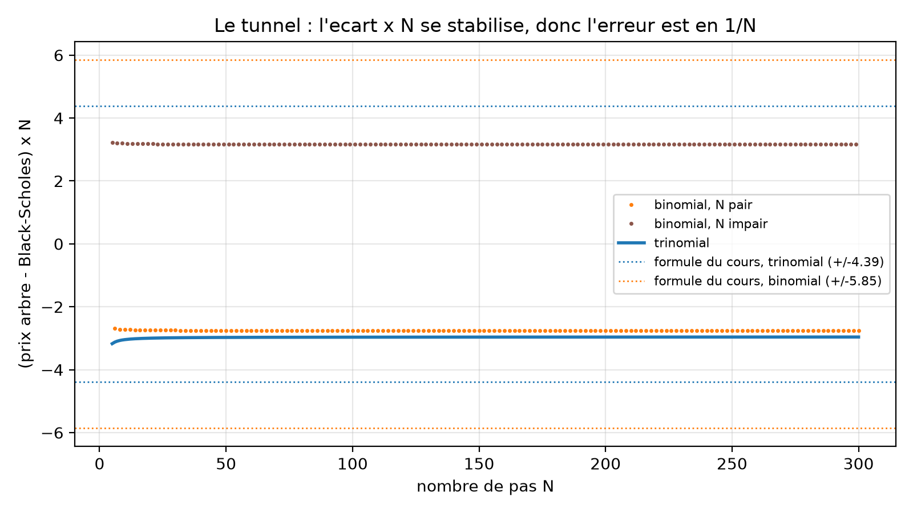
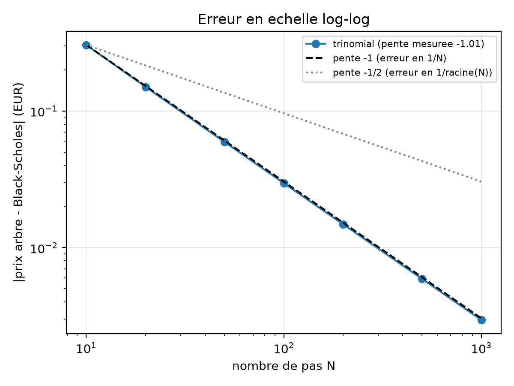
L'écart × N vaut −3,044 à N = 10, puis −2,966 à N = 100 et −2,961 à N = 300. En log-log, la pente mesurée entre N = 10 et N = 1000 vaut −1,006. L'arbre est déterministe, donc il n'y a pas de bruit d'échantillonnage, qui donnerait le 1/√N du Monte-Carlo. Son erreur vient de la discrétisation du payoff : il perd un triangle autour du coude en K, dont la surface est proportionnelle à ΔS², donc à Δt. Cette précision a un coût, qui croît en N² : entre N = 400 et N = 1000, le temps de construction passe de 478 ms à 3 500 ms, ce qui correspond à un exposant de 2,17.
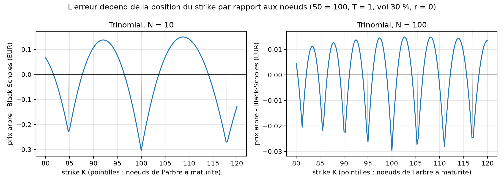
L'écart n'est pas constant : il oscille avec le strike, et ses minima tombent là où le strike coïncide avec un nœud de la maturité. À N = 10, il vaut −0,304 € pour K = 100 (strike sur un nœud) et +0,147 € pour K = 108 (entre deux nœuds). Quand le strike est sur un nœud, l'arbre perd tout le triangle sous le coude du payoff ; quand il tombe entre deux nœuds, l'interpolation surestime au contraire le payoff.
C'est aussi ce qui explique le comportement du binomial. Avec pmid = 0, le nœud au niveau de S0 n'est atteint qu'un pas sur deux : le strike K = 100 tombe donc sur un nœud quand N est pair (−2,756 à N = 100) et entre deux nœuds quand N est impair (+3,162 à N = 101). Pour K = 105, l'écart × N vaut +0,847 puis +2,349 : il dépend encore de la parité, mais ne change plus de signe.
Nous avons enfin confronté la formule d'erreur du cours à nos prix. Elle donne la bonne loi en 1/N, mais elle surestime l'erreur de 48 %, et cela de façon stable : à N = 100, elle annonce 0,043875 quand nous mesurons 0,029660. Elle ne compte en effet que la perte au nœud le plus proche du strike. Le nombre de pas que l'on en déduit est donc prudent : viser un écart de 1 centime donne en réalité 0,67 centime.
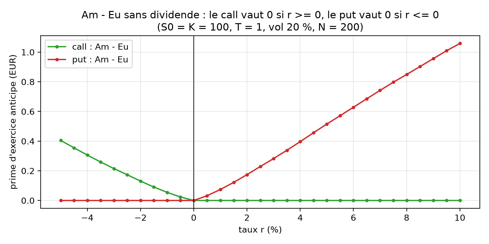
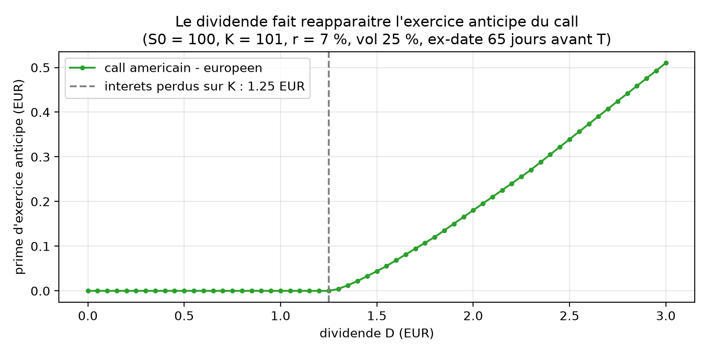
Sans dividende, le call américain vaut le call européen dès que r ≥ 0 : exercer tôt oblige à payer K plus tôt, pour aucun gain. Symétriquement, le put américain vaut le put européen dès que r ≤ 0. Avec un taux négatif, les rôles s'inversent : la prime du call vaut 0,4046 € à r = −5 %. Un dividende fait réapparaître l'exercice du call si D dépasse les intérêts perdus sur le strike, K(1 − e−rτ) = 1,2512 €, et dans notre exemple la prime devient positive à partir de D = 1,30 €.
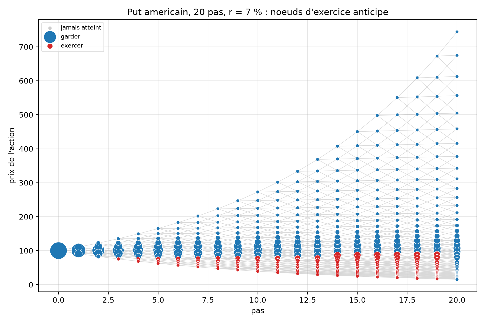
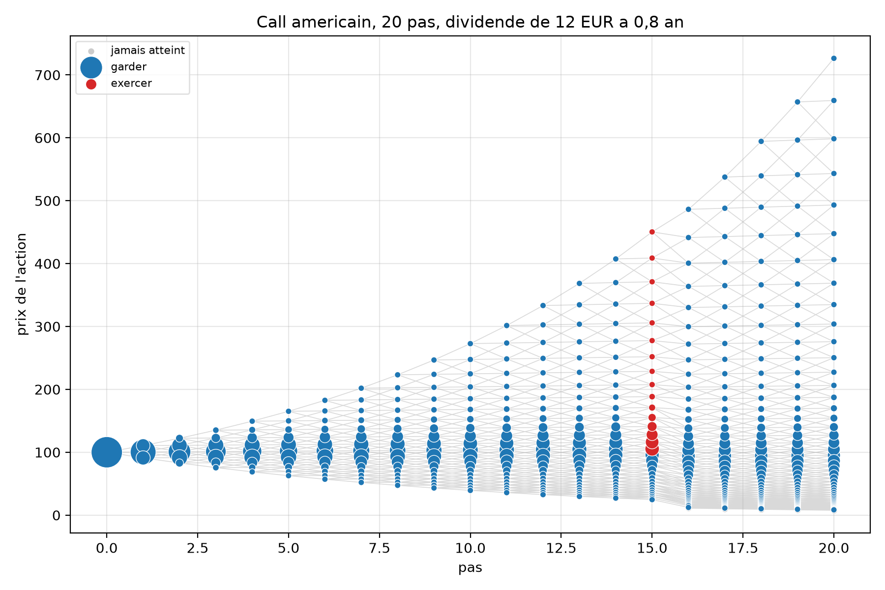
plot_tree. Le put s'exerce sur une bande de prix bas, à toutes les dates. Le call ne s'exerce qu'à la dernière date avant le détachement (pas 15 ; ex-date au pas 16).À r = 0 (S0 = K = 100, σ = 20 %, dividende à 6 mois, N = 200), le call et le put à la monnaie valent tous les deux 7,9556 € sans dividende. Avec D = 3 €, le call baisse à 6,5575 € et le put monte à 9,5575 € : put − call = 3,000000000000. À taux nul, la parité s'écrit C − P = S0 − D − K : le dividende retire D au forward, et l'écart vaut exactement D à la monnaie. Hors de la monnaie, l'écart vaut D + K − S0, par exemple −7 pour K = 90.
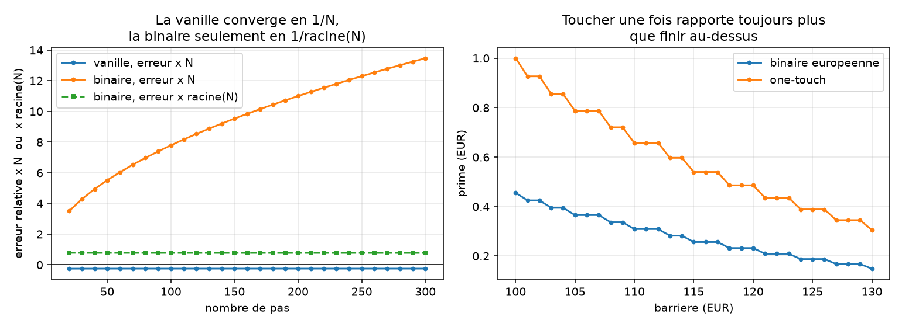
Une binaire paie 1 € ou rien : dans OptionTrade, il suffit de passer is_binary=True pour que payoff renvoie 1 au-delà du strike et 0 sinon. Le reste du moteur ne change pas. La binaire européenne a une formule fermée, e−rTN(d2), qui sert de référence. Elle converge pourtant beaucoup moins bien qu'une vanille : son payoff a un saut au strike et non un simple angle, et l'arbre ne voit ce saut qu'aux nœuds, dont l'écart diminue comme √Δt. À la monnaie, l'erreur × √N reste à 0,343 de N = 20 à N = 300, alors que l'erreur × N grimpe de 3,5 à 13,5 : la binaire converge en 1/√N, et non en 1/N.
Le one-touch paie 1 € dès que le sous-jacent touche la barrière. Nous l'avons construit comme une binaire américaine : à chaque nœud, le pricer prend déjà le maximum entre garder et exercer, et au-delà de la barrière exercer rapporte 1 €, donc il encaisse tout de suite. Toucher une fois étant plus facile que finir au-dessus, le one-touch vaut 2,05 à 2,19 fois la binaire européenne de même barrière. Cette construction suppose un taux positif ou nul : avec r < 0, garder peut valoir plus que 1 € (1,0063 € à r = −2 % pour une barrière déjà franchie).
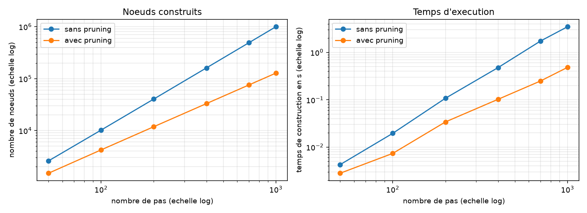
| N = 1000 | sans | avec |
|---|---|---|
| nœuds | 1 002 001 | 127 904 |
| temps | 3 500 ms | 485 ms |
| mémoire | 168,2 Mo | 21,5 Mo |
| biais | — | −1,9e-8 € |
En échelle logarithmique, le nombre de nœuds suit une pente de 1,99 sans pruning, c'est-à-dire la croissance en N² de l'arbre complet, contre 1,48 avec. À N = 1000, le pruning divise par 8 le nombre de nœuds et la mémoire, et par 7 le temps de construction, pour un biais invisible. Le choix du seuil est un compromis : à N = 500, un seuil de 1e-10 supprime déjà 77,7 % des nœuds pour un biais de 5,9e-12, tandis qu'un seuil de 1e-3 en supprime 89,2 % pour un biais de 9,5e-4. Nous l'avons laissé désactivé par défaut, parce qu'il casserait les invariants exacts de la section 03.
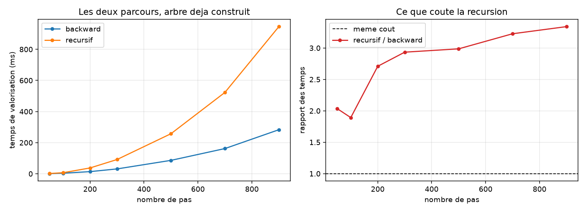
Les deux parcours rendent exactement le même prix : de N = 50 à N = 900, ils sont identiques au bit près. Le récursif est en revanche 1,9 à 3,3 fois plus lent, car il paie un appel de fonction par nœud, que le backward évite en parcourant les colonnes avec une simple boucle. Surtout, il empile un niveau d'appel par colonne et bute sur la limite de récursion de Python, fixée à 1000 : un arbre de 1000 pas est refusé, alors que le backward le price sans difficulté. C'est pour cela que le backward reste la méthode par défaut.
Avec un gros dividende, le forward d'un nœud tout en bas de l'arbre peut devenir négatif. find_closest cherchait alors le nœud le plus proche d'une cible négative en descendant la colonne. Or un prix divisé par α reste toujours positif : la condition d'arrêt n'arrivait jamais. Le programme ne plantait pas, il créait des nœuds sans fin, jusqu'à 12 Go de mémoire et un processus à tuer à la main.
Solution : nous avons ajouté un garde-fou assert target > 0 en tête de find_closest, un test fwd > 0 dans build_next_column avant chaque recherche, et prune_invalid, qui élague un nœud impossible à modéliser s'il est pratiquement inatteignable, et lève une erreur claire sinon. Avec un dividende, l'élagage n'est donc plus seulement une optimisation : il devient nécessaire.
Le pruning coupe les branches dont la probabilité d'atteinte passe sous un seuil, et les remplace par un passage tout droit vers le nœud du milieu. C'est une approximation, et elle laisse un petit biais sur le prix : −1,9e-8 € à N = 1000 avec un seuil de 1e-7. Pour un prix, c'est invisible. Mais nos invariants exacts du dividende (call de strike nul, parité call-put) sont testés à 1e-10 : avec le pruning activé en permanence, ils ne passaient plus, alors que l'arbre n'avait aucun bug.
Solution : nous avons rendu le pruning optionnel et désactivé par défaut (prune=False). Les tests exacts tournent sur l'arbre complet, et l'utilisateur active le pruning lui-même quand il travaille à grand N, en sachant qu'il échange un biais de l'ordre du seuil contre 8 fois moins de nœuds et de mémoire, et 7 fois moins de temps de construction.
Le cours propose de construire le visuel final dans Excel, et c'est ce que nous avons essayé en premier. Mais faire communiquer Excel avec notre code Python s'est révélé plus difficile que prévu : il fallait à la fois envoyer les paramètres d'Excel vers le pricer, et faire revenir les prix, les grecques et l'arbre dans la feuille.
Solution : nous avons choisi une application Streamlit, écrite en Python comme le reste du projet. Elle appelle directement api.price, sans aucune couche de liaison entre deux logiciels.
L'essentiel de notre travail a porté sur l'architecture. Nous avons compris qu'un arbre fait uniquement de pointeurs ne reste simple que si chaque objet a un rôle étroit et en sait le moins possible. Le nœud sait créer un voisin et choisir son successeur. L'arbre calcule les constantes et enchaîne les colonnes. Le pricer ne connaît que la racine et remonte par le tronc. Et tout le reste, des grecques à l'application, passe par api.price. C'est ce découpage qui nous a permis d'obtenir le binomial par simple héritage, d'ajouter le pruning en quelques lignes dans link_successors, d'ajouter les binaires en ne touchant qu'au payoff, et de tester les nœuds sans construire d'arbre réel.
Côté résultats, nous avons vérifié que l'erreur décroît bien en 1/N, mais qu'elle dépend de la position du strike par rapport aux nœuds, ce qui explique aussi l'oscillation du binomial. Nous avons aussi vu que le call américain n'a de valeur d'exercice anticipé qu'avec un taux négatif, ou avec un dividende supérieur aux intérêts perdus sur le strike. Enfin, les binaires montrent la limite de la méthode : un payoff qui saute ne converge plus qu'en 1/√N.